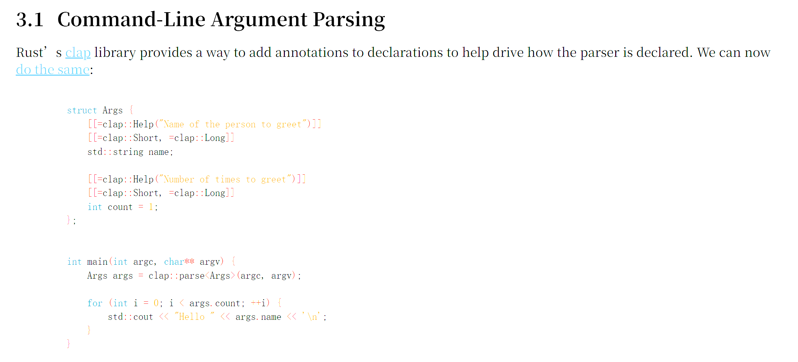
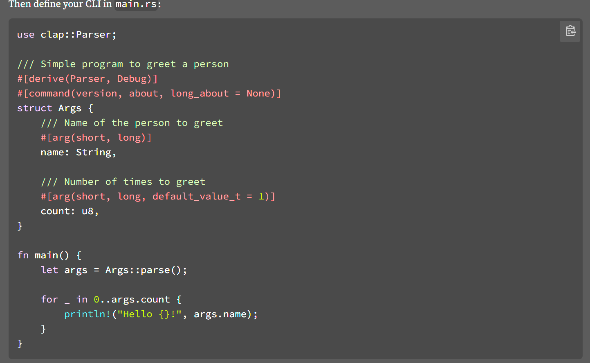

ICmd 使用接口¶
ICmdInterface¶
ICmdInterface 的声明如下：
ICmdInterface 有两个模板参数，第一个模板参数是继承类型。第二个模板参数 bool 类型的意思是是否使用这个 Cmd， 这个参数默认是 true,使用该Cmd。如果用户显示声明该参数为false， 则这个Cmd 不会被解析，也不会被执行到。
$AsCmd¶
$AsCmd 是一个宏注解，这个宏注解作两件事情，第一个是定义一些函数用于执行相关的函数调用功能。第二个是定义一些前导路径。
$AsCmd 必须有参数，用户可以设置最多9个参数。这些参数加上 CmdMapping 中定义的路径，就是整个 Cmd 所映射的路径。如果$AsCmd 中的路径是 / 这个路径就会被忽略。所以如果用户如果不想在 $AsCmd 中定义任何前导路径，则需要写成 $AsCmd(/)，注意所有的路径不能够加引号。
$AsCmd 的示例见上。
$CmdMapping¶
$CmdMapping 是定义具体的处理函数的。CmdAction 在处理完成 参数和选项之后，如果没有退出程序，就会执行该 $CmdMapping 所定义的函数。
$CmdMapping的第一个参数必须是函数的名称。$CmdMapping 后面跟随的也必须是该函数。
$CmdMapping如果只有一个参数，那么这个参数既是函数名称也是函数的路径。AsCmd 定义的路径 加上这个路径就是整个 CmdAction 的路径。
$CmdMapping 如果有其他的参数，那么其他的参数就是他的函数路径。此时不会再用函数名称作为路径。
$CmdMapping 最多有9个参数，其中，第一个参数为函数名称，剩下8个用于定义路径使用。
$CmdMapping 的路径可以为 / 。如果路径为 /。那么这个 CmdAction 的路径就是 $AsCmd 中定义的路径。
一个类中，可以定义多个 $CmdMapping。 如果有多个 $CmdMapping 出现，那么他们定义的处理函数会共享所有的参数和选项配置。在具体的实践中，不建议一个类中定义多个 $CmdMapping, 除非他们真的能共享所有的参数和选项。
$CmdMapping 所定义的函数的返回类型必须是 void。函数参数可以为空，或者为 ICmdRequest, 或者ICmdRequest 的引用类型，其他类型非法。
例证见示例。
$CmdMappingMemo¶
$CmdMappingMemo 的作用是为 $CmdMapping 生成相关的注释，让用户理解这个 Cmd 是干什么的。
$CmdMappingMemo 的参数有两个，第一个是 $CmdMapping 对应的函数。第二个是 他的注释。注意注释要使用 "" 双引号括起来。
建议所有的 $CmdMapping 都搭配一个 $CmdMappingMemo 。这样使用者会更容易理解这个命令行该如何使用。
$CmdOption 系列¶
$CmdOption 的目的是用于定义命令行选项。
$CmdOption 的声明如下：
它只有一个参数， Opt, 这个Opt 就是 选项的名称。
$CmdOption 定义一个bool 类型的变量，变量的名称就是第一个参数的内容。这个变量指示 这个选项是否被放置在请求中。如果请求中带有这个选项，这个变量就会是 true, 否则是 false。
如果用户使用这个选项，则需要在名称加上 -- 去发送 Cmd 请求。比如用户定义 $CmdOption(value), 则用户发送请求的时候则是 --value。
如果在Cmd 类中，一个请求中有选项没有被定义，那么这个请求就是有问题的，无效的。程序执行的时候会指出错误。
下面是 $CmdOption 中的一些附属的内容
$CmdOptionShortName¶
这个宏注解是用于定义 $CmdOption 中选项的简写。
$CmdOptionShortName 有两个参数。第一个参数是对应的 option 的名称，第二个参数是简写的名称。比如定义$CmdOptionShortName(value, v) 那么就会为 value 声明一个段名称 v。
$CmdOptionShortName 使用 - 一个横杠去声明选项，比如上面的定义中，使用 -v 去声明 value 这个选项，等同于 --value 。
$CmdOptionShortName 中的第一个参数必须有对应的 $CmdOption 声明的选项。
$CmdOptionShortName 可以省略不写，如果没写的话，该选项则没有端名称。
$CmdOptionMemo¶
这个是用户个 选项声明一个 Memo 描述。
他有两个参数，第一个参数是 选项的名称，记住是全称而不是简写。
第二个参数是描述。注意描述使用 双引号 "" 括起来。
$CmdOptionMemo 可以省略。
$CmdOptionNoValue¶
$CmdOptionNoValue 注解表示该选项不能有后续参数，如果有后续参数，程序会报错。
$CmdOptionNoValue 只有一个参数，这个参数就是 选项的名称。
$CmdOptionRequired¶
$CmdOptionRequired 表示这个选项在请求的时候必须携带。如果没有携带，程序会报错。
$CmdOptionRequired 只有一个参数，这个参数就是选项的名称。
$CmdOptionPreHandle¶
$CmdOptionPreHandle 用于定义一个在设置 选项之前执行的函数。
$CmdOptionPreHandle 可以设置两个参数，第一个参数是对应的选项。这个是必须的，第二个参数是函数名称。
如果省略第二个参数，那么这个函数名称默认是 optionName_PreHandle。如果没有定义这个optionName_PreHandle，程序将报错。
preHandle 的函数必须紧跟着 $CmdOptionPreHandle 宏注解。
$CmdOptionPostHandle¶
$CmdOptionPreHandle 用于定义一个在设置 选项之后执行的函数。
$CmdOptionPreHandle 可以设置两个参数，第一个参数是对应的选项。这个是必须的，第二个参数是函数名称。
如果省略第二个参数，那么这个函数名称默认是 optionName_PostHandle。如果没有定义这个optionName_PostHandle，程序将报错。
postHandle 的函数必须紧跟着 $CmdOptionPostHandle 宏注解。
举例如下：
上述代码在设置了 packageName 之后就会执行 checkPackageName() 这个函数，在设置了 version之后也会执行 checkVersion 函数。用户可以在这些函数中执行检查，如果检查不过关，则可以报错。
$CmdOpitonValue 系列¶
$CmdOption 的目的是判断当前 选项的有无，但是它没有进一步的提供选项参数的处理工作。选项参数的处理工作由 $CmdOptionValue 来完成。
$CmdOptionValue 的定义如下：
它有三个参数，第一参数是对应的 选项 Option 的名称（全名）。这个选项必须存在。第二个参数是指 Option 的参数将被映射成为的类型，比如 int 类型， QList
类型参数可以为以下类型：
- QString 字符串类型
- 数值类型，
- 数值类型包括 整型 和 浮点型数据。
- 注意 ，char, uchar 类型不能使用。
- 如果不是数值，或者数值类型超出 类型范围，程序会报错。
-
bool 类型
-
如果参数是 "true", "yes", "y", "on", "1", "enable"， 这些会被判断为 true
- 如果参数是 "false", "no", "n", "off", "0", "disable",这些会被判断为 false
- 如果除了这些值以外，其他的值 程序会报错。
- QList
复合类型。XXX 可以为 字符串类型，数值类型。
如果类型参数不是复合类型，那么只能选项的参数只能够有一个，如果超过了一个，则会报错。这个也是一个很好的限定条件。
$CmdOptionValue 可以有以下的限定宏注解使用。
$CmdOptionValueDeclare¶
这个和 $CmdOptionValue类似，主要是用于给 选项参数以默认值。比如
在第一种的定义中，countValue 的默认值是 0， 而在第二中的声明中，countValue 的默认值则是10。
$CmdOptionValueMemo¶
$CmdOptionValueMemo 的作用是给 OptionValue 作一个注释。用法和其他的 Memo 一致，这里不再多说。
$CmdOptionValuePreHandle¶
$CmdOptionValuePreHandle 的用法和 $CmdOption 的 用法一致，用于在选项参数设置之前进行拦截处理。
$CmdOptionValuePostHandle¶
$CmdOptionValuePostHandle 的用法和 $CmdOption 的 用法一致，用于在选项参数设置之后进行拦截处理。
$CmdArgs 系列¶
$CmdArgs 是用于解析和存储请求中的参数。用法和$CmdOptionValue 类似。
ICmd 中的参数的设置是以 -- 之后的为命令行参数。注意 -- 双杠之后必须要有空格。一个请求可以有多个命令行参数。一个命令行可以有多个以 -- 为开头的命令行参数设置。命令行参数的顺序是他们出现在命令行中的顺序。
$CmdArgs 的定义是如下：
它有两个参数，第一参数是用户想将 命令行参数解析成为什么类型， 第二个参数是我们想让CmdArgs 叫什么名字。
可用的类型有以下：
- QString 字符串类型
- 数值类型
- bool 类型
- QList
复合类型, 以及 QStringList
这些参数类型的规则和 $CmdOptionValue 的规则一致。如果用户定义的 $CmdArgs为 非复合类型，则参数只能有一个。
在一个程序中，$CmdArgs 理论上可以定义多个，他们可以有不同的类型，将数据转换成不同的类型，以便程序进行处理。但如无必要，不要使用多个 $CmdArgs.
$CmdArgs 可以有以下的附属类型
$CmdArgsDeclare¶
$CmdArgsDeclare 的用法和$CmdOptionValude 的用法一致，可以给参数一个默认值。
如果用户使用该类型，则需要配合以 $CmdArgsNullable 注解。
$CmdArgsNullable¶
$CmdArgsNullable 表示参数可以为空。如果请求中的参数为空，则不进行设置和执行 preHandle 和 postHandle 的操作。
$CmdArgsNullable 只有一个参数，这个参数就是 $CmdArgs 所定义的参数名称。
如果对于一个 参数定义而言，没有定义 $CmdArgsNullable, 则这个参数不能够被省略，如果省略了，则会报错。
$CmdArgsMemo¶
用法和其他的Memo一致。
$CmdArgsPreHandle¶
用法和其他的PreHandle 一致
$CmdArgsPostHandle¶
用法和其他的 PostHandle 一致。
$CmdArgX 系列¶
$CmdArgX 和$CmdArgs 不同， $CmdArgX 用于一个一个的处理参数。
在实际的使用中，没有 $CmdArgX 这个注解, X 代表从1到9的数字，比如$CmdArg1, $CmdArg2 一直到 $CmdArg9。其后的 X 也是如此处理。
下面以 $CmdArg1 进行说明。
$CmdArg1 的定义如下：
他有两个参数，第一个是 Type 类型，第二个是 Name 名称。
注意这里的类型不能够是复合类型，必须是简单类型， 比如 QString, int， bool 等。因为这里引入的是参数第一项来转换为 Type 类型。
$CmdArgXDeclare¶
这个命令的作用是为 要解析的参数设置一个默认值，这个命令要和 $CmdArgXNullable 一起使用，否则无效。
$CmdArgXNullable¶
这个表示参数可以为空。
这个宏注解不需要带参数。因为中间有 X 数字, 这个已经暗示了它的信息了，属于第几个参数解析。
如果没有这个注解，当 X 位置的参数空缺的时候，程序会报错。
$CmdArgXPreHandle¶
这个和其他的PreHandle 类似。
注意这里只需要传递一个参数，就是函数名称。
$CmdArgXPostHandle¶
这个和其他的PostHandle 类似。
注意这里只需要传递一个参数，就是函数名称。
$CmdArgXMemo¶
这个是用于说明 X 位参数的描述。
注意这里只需要一个参数，就是它的描述。
c++26 的注解功能¶
在ICmd的功能整体内容写出来的时候，c++26的内容定制出来了，剩下的是修一些bug,之后c++26会被完整发布。在c++26中主要的内容是反射。其中有一份的提案特别有意思。

上面的这个clap 库的使用方法则如下：

这个提案中的这个描述与我的想法不谋而合，原来大家都想使用注解来处理命令行。所以在以后，ICmd 会被c++26 所废弃，或者重构。